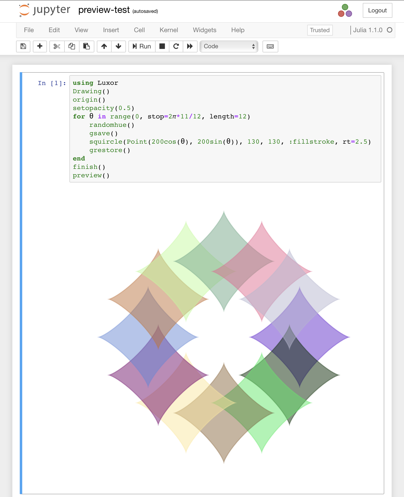
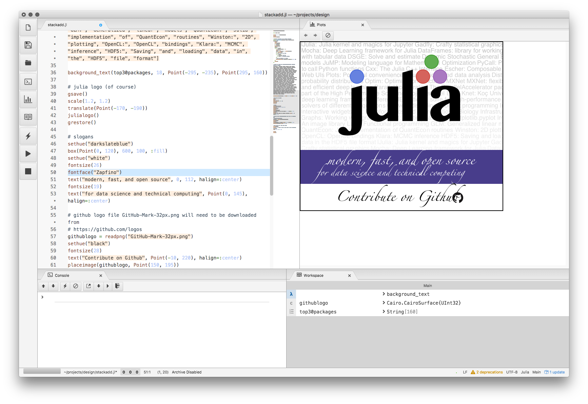
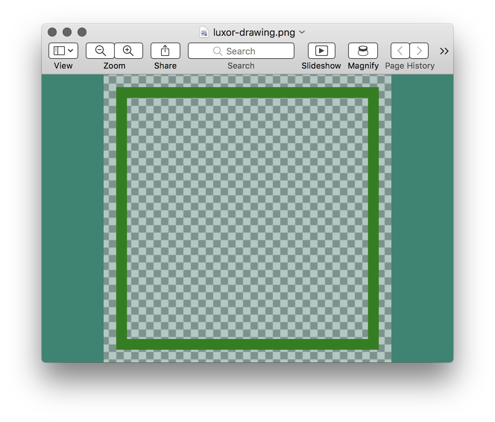
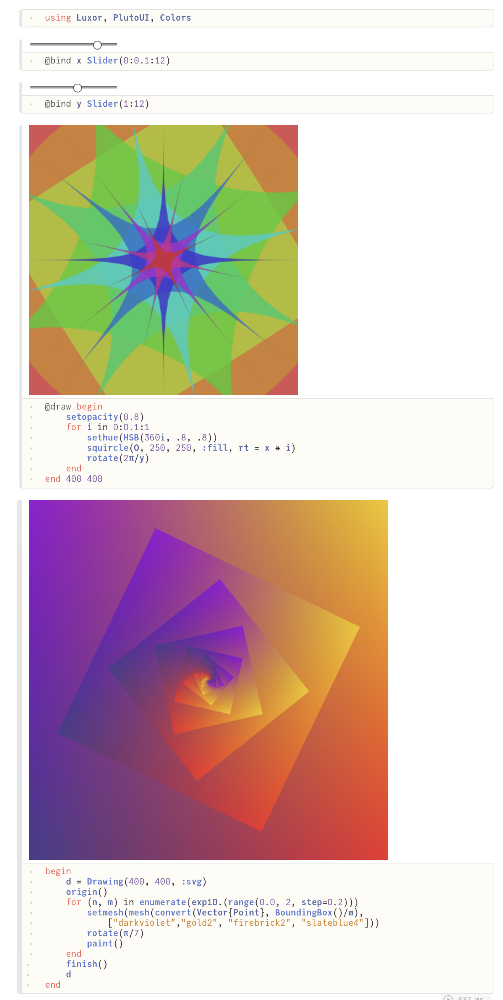
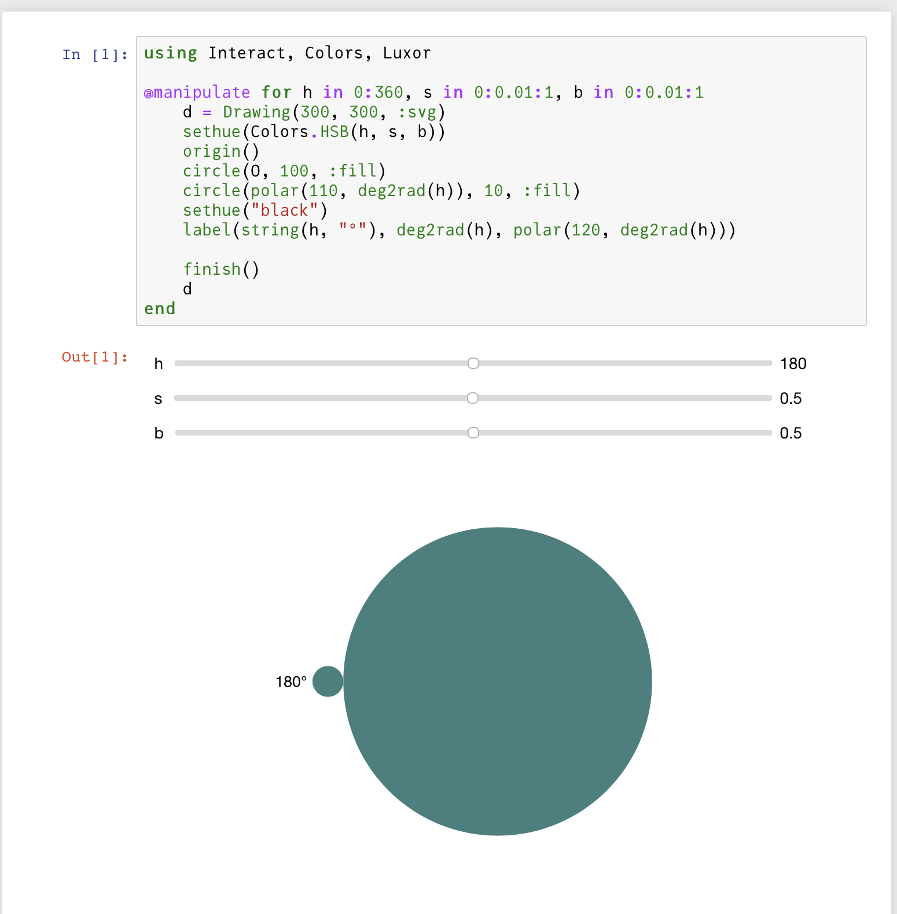

Create a Drawing
In Luxor you always work with a current drawing, so the first thing to do is to create one.
To create a drawing, and optionally specify the filename, type, and dimensions, use the Drawing constructor function.
To finish a drawing and close the file, use finish.
If the drawing doesn't appear automatically in your notebook or editing environment, you can type preview to see it.

If you're using VS Code, then PNG and SVG drawings should automatically appear in the Plots pane, if it's enabled. In a Pluto notebook, output appears above the cell. In a notebook environment, output appears in the next notebook cell.

SVGs are text-based, and can get quite big. Up to a certain size, SVGs will preview as easily and quickly as PNGs. As they get larger, though, they'll take longer, and it won't be long before they'll take longer to preview than to create in the first place. Very large drawings in SVG format might not display at all.
In Julia, the result of the most recently evaluated expression is usually displayed in a suitable form for the current environment. If the most recent expression was a Luxor drawing, it will probably be displayed somewhere, unless you're working in the REPL. So this code:
Drawing(100, 100, :png)origin()sethue("green")circle(O, 10, :fill)finish()preview()println("finished")won't display a drawing with a circle - the most recent result is returned by println(), not preview().
Quick drawings with macros
The @draw, @svg, @drawsvg, @png, and @pdf macros are designed to let you quickly create graphics without having to provide the usual boiler-plate functions.
The macros are shortcuts, designed to make it quick and easy to get started. You can save keystrokes and time, but, for full control over all parameters, use Drawing.
For example, this:
@svg circle(Point(0, 0), 20, action = :stroke) 50 50is equivalent to this:
Drawing(50, 50, "luxor-drawing-(timestamp).svg")origin()background("white")sethue("black")circle(Point(0, 0), 20, action = :stroke)finish()preview()You can omit the width and height (thus defaulting to 600 by 600, except for @imagematrix), and you don't have to specify a filename (you'll get time-stamped files in the current working directory). For multiple lines, use either:
@svg begin setline(10) sethue("purple") circle(Point(0, 0), 20, action = :fill)endor (less nicely):
@svg (setline(10); sethue("purple"); circle(Point(0, 0), 20, action = :fill) )If you don't specify a size, the defaults are usually 600 by 600. If you don't specify a file name, files created with the macros are placed in your current working directory as luxor-drawing- followed by a time stamp. You don't even have to specify the suffix:
@svg juliacircles(150) 400 400 "test" # saves in "test.svg"If you want to create drawings with transparent backgrounds, or work with the (0, 0) point at the top left, use the longer form, rather than the macros.
Drawing()background(1, 1, 1, 0)origin()setline(30)sethue("green")box(BoundingBox() - 50, action = :stroke)finish()preview()
In-memory drawings
You can choose to store drawings in memory rather than use files. The advantage is that in-memory drawings are quicker, and the results can be passed as Julia data. Also, it's useful in some restricted environments to not have to worry about writing files.
This syntax for the Drawing function:
Drawing(width, height, surfacetype, [filename])lets you supply surfacetype as a symbol (:svg, :png, :image, or :rec). This creates a new drawing of the given surface type and stores the image only in memory if no filename is supplied.
The @draw macro (equivalent to Drawing(..., :png)) creates a PNG drawing in-memory (not saved in a file). You should see it displayed if you're working in a suitable environment (VSCode, Jupyter, Pluto).
The SVG equivalent of @draw is @drawsvg.
Use svgstring() to extract the SVG drawing's source as text.
If you want to generate SVG code without making a drawing, use @savesvg instead of @drawsvg.
Concatenating SVG drawings
The Julia functions hcat() and vcat() can concatenate two SVG drawings horizontally or vertically.
using Luxord1 = @drawsvg begin sethue("blue") paint()end 200 100d2 = @drawsvg begin sethue("yellow") paint()end 200 100vcat(d1, d2)">
<path fill-rule="nonzero" fill="rgb(0%25, 0%25, 100%25)" fill-opacity="1" d="M -20 -10 L 220 -10 L 220 110 L -20 110 Z M -20 -10 "/>
</g>
<g clip-path="url(%23clip-1)">
<path fill-rule="nonzero" fill="rgb(100%25, 100%25, 0%25)" fill-opacity="1" d="M -20 90 L 220 90 L 220 210 L -20 210 Z M -20 90 "/>
</g>
</svg>)
Creating many drawings
You can create many drawings in a loop by specifying the filenames. For example, this creates separate PNG drawings of every glyph in the Unicode range 0x20 to 0xff.
for (i, glyph) in enumerate(0x20:0xff) @png begin background("white") fontsize(300) fontface("JuliaMono-Black") text(string(Char(glyph)), halign=:center, valign=:middle) end 512 512 "/tmp/glyph-$(string(i))-0x$(string(glyph, base=16)).png"endInteractive drawings
Using Pluto
Pluto notebooks typically display the final result of a piece of code in a cell. So there are various ways you can organize your drawing code. For example:
using Luxor, PlutoUI, Colors@bind x Slider(0:0.1:12)@bind y Slider(1:12)@draw begin setopacity(0.8) for i in 0:0.1:1 sethue(HSB(360i, .8, .8)) squircle(O, 50, 50, action = :fill, rt = x * i) rotate(2π/y) endend 100 100or
begin d = Drawing(800, 800, :svg) origin() for (n, m) in enumerate(exp10.(range(0.0, 2, step=0.2))) setmesh(mesh(convert(Vector{Point}, BoundingBox()/m), ["darkviolet","gold2", "firebrick2", "slateblue4"])) rotate(π/7) paint() end finish() dend
Using Jupyter notebooks (IJulia and Interact)
This example uses Interact.jl to provide an HSB color widget.
using Interact, Colors, Luxor@manipulate for h in 0:360, s in 0:0.01:1, b in 0:0.01:1 d = Drawing(300, 300, :svg) sethue(Colors.HSB(h, s, b)) origin() circle(Point(0, 0), 100, action = :fill) circle(polar(110, deg2rad(h)), 10, action = :fill) sethue("black") label(string(h, "°"), deg2rad(h), polar(120, deg2rad(h))) finish() dend
Drawing pixels
The Drawing() function accepts an array of ARGB32 values as a drawing surface.
ARGB32 is a type of 32 bit unsigned integer that combines four values (8 bits for alpha, 8 bits for Red, 8 for Green, and 8 for Blue) into a 32-bit number between 0 and 4,294,967,296. ARGB32 is defined in ColorTypes.jl, and is available in Luxor.jl via Colors.jl, as Luxor.Colors.ARGB32, or, if you're using Colors.jl or Images.jl, directly as ARGB32.
using LuxorA = zeros(Luxor.Colors.ARGB32, 150, 600) # 150 rows, 600 columnsDrawing(A)for i in 1:15:150 A[i:i+10, 1:600] .= Luxor.Colors.RGB(rand(), rand(), rand())endorigin()for i in 1:100 randomhue() ngon(rand(BoundingBox()), 15, 4, 0, :fill)endfinish()
As a standard Julia array, A will be shown as an image in your notebook or editor if you're using Images.jl.
In this example the array uses Julian "column-major" array addressing. Luxor functions use the Point type on a Cartesian coordinate system, where the origin is (by default) at the top left of the drawing. Locations along the x-axis correspond to the column indices of the array, locations along the y-axis correspond to the rows of the array (until you use the origin() function, for example).
You can also create a pixel array on a PNG drawing when saved as a file:
using Luxorusing ImagesA = zeros(ARGB32, 50, 50)Drawing(A, "/tmp/t.png")for p in eachindex(A) A[p] = RGBA(rand(), rand(), rand(), 1)endfinish()preview()Extracting the drawing as an image
If you create a drawing using Drawing(w, h, :png), you can use the image_as_matrix function at any stage in the drawing process to extract the drawing in its current state as a matrix of pixels.
See the Drawings as image matrices section for more information.
Recordings
The :rec option for Drawing() creates a recording surface in memory. You can then use snapshot(filename, ...) to copy the drawing into a file. See Snapshots.